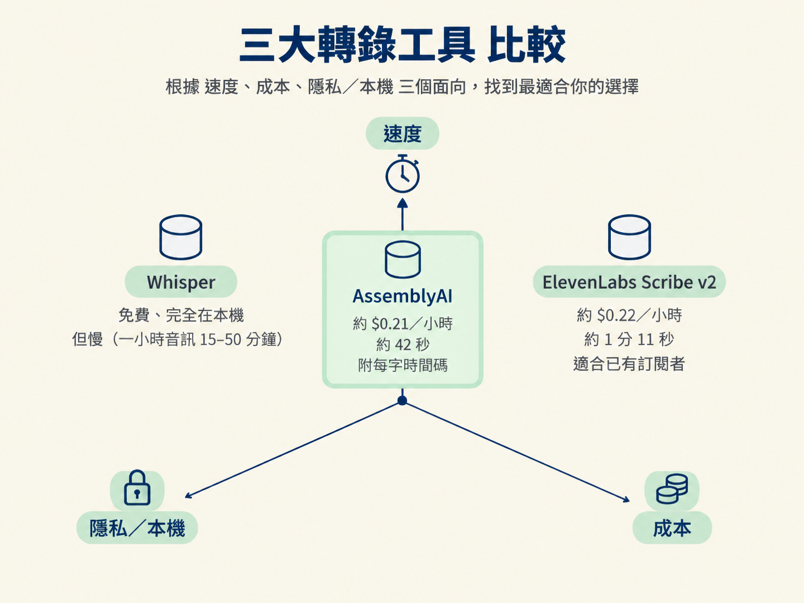
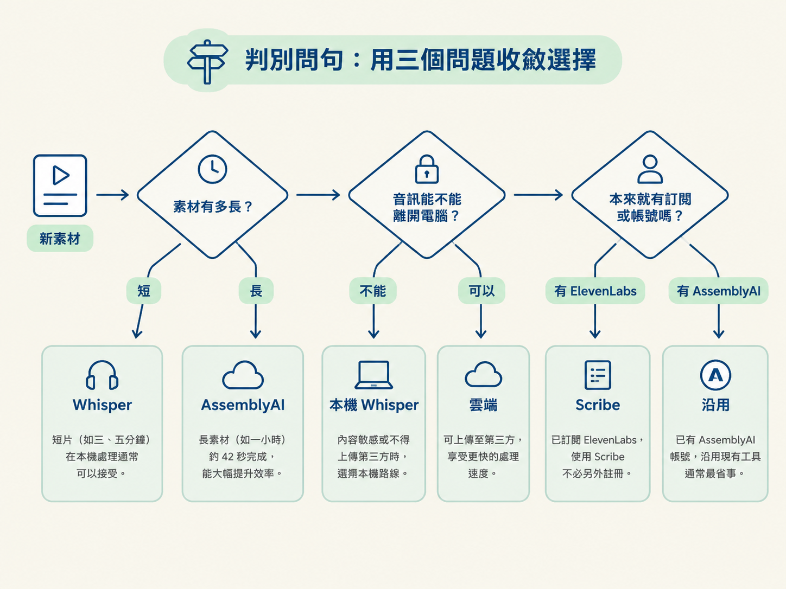
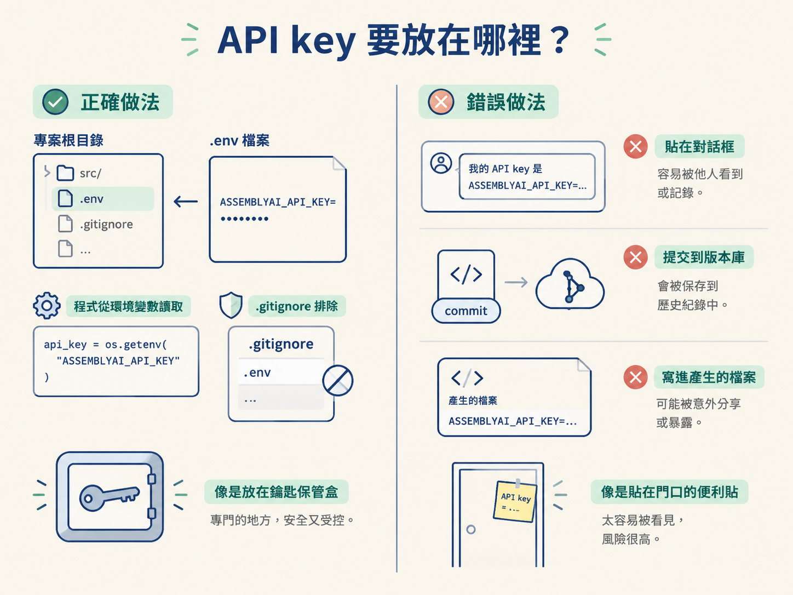

上一節我們確認了：逐字稿是 agent 的耳朵，也是整條產線的時間軸。接下來要做的，就是把音訊轉成逐字稿，讓後續的剪輯與稽核有材料可以依循。
問題是，轉錄工具不只一個。你可以用免費、在本機執行但需要等待的 Whisper；也可以用速度快、需要 API key 的 AssemblyAI；如果本來就訂閱 ElevenLabs，還能選擇 Scribe。它們沒有絕對的第一名，差別在於你願意拿什麼去換什麼：時間、費用，還是隱私。
另外還有一個容易被忽略的決定：API key 要放在哪裡。工具選錯，可能只是多等一會兒；金鑰放錯，卻可能變成每次都要手動貼上，甚至意外外洩。這一節會先比較工具，再處理金鑰的收納方式。
| 工具 | 成本 | 速度 | 要留意的事 |
|---|---|---|---|
| Whisper | $0，跑在自己的電腦上 | 一小時音訊約 15–50 分鐘（看 CPU） | 免費、免帳號，但明顯慢 |
| AssemblyAI | 約 $0.21／小時音訊 | 一小時音訊約 42 秒 | 會回傳每個字的精確時間；需要 API key |
| ElevenLabs Scribe v2 | 約 $0.22／小時音訊 | 一小時音訊約 1 分 11 秒 | 免費方案每月涵蓋 4 小時 30 分；約比 AssemblyAI 慢 40% |
速度差距很容易感覺出來。同樣是一小時的音訊，Whisper 在本機可能要跑 15 到 50 分鐘；AssemblyAI 約 42 秒就能完成，成本大約是 0.21 美元。更重要的是，AssemblyAI 會附上每一個字的精確時間，這正是 agent 後續剪片時很需要的資訊。
因此，多數教學流程會預設使用 AssemblyAI：它在速度和成本之間拿捏得不錯。Whisper 的優勢則是免費，而且音訊可以完全留在自己的電腦裡。ElevenLabs Scribe v2 適合本來就訂閱 ElevenLabs 的人，不必為了轉錄另外開一個帳號；它的免費方案每月也涵蓋 4 小時 30 分的音訊。

面對一段新素材，不必先逐項比較一長串功能。你可以依序問自己三個問題，像是在岔路口放下三個路標。

「免費」不一定代表總成本最低。假設你正在反覆修改同一支影片，每次只改一句話，卻都要重新轉錄一次。如果 Whisper 每次要跑十幾分鐘，累積下來的等待時間，價值可能遠超過那 0.21 美元。這種要反覆重跑的狀況，付費換速度反而更省。
但如果你只是偶爾剪一支短片，本機免費路線可能已經完全夠用。這時候為了省幾分鐘而付費，反而是多花錢。
隱私也會讓規則翻轉。有些訪談或內部訓練內容不適合上傳到第三方。這種情況下，雲端服務就算再快也不能選；這已經不是價格問題，而是能不能使用的問題。
反過來說，如果素材本身就要公開發布，內容也不敏感，那麼為了隱私而忍受本機工具的速度，就未必有必要。
AssemblyAI 這類雲端服務需要一把 API key。處理金鑰的原則很簡單：把它放進專案的環境變數檔，讓工具去讀；不要讓它出現在對話或版本控制裡。
慣例上，可以在專案根目錄建立一個 .env 檔案，裡面先留一行空的變數：
# .env
ASSEMBLYAI_API_KEY=starter prompt 通常會請 agent 建立這個檔案、告訴你它在哪裡，接著由你自己把金鑰填進去。這樣做有兩個好處。
第一，agent 執行程式時可以從環境變數取得 key，你不必每次都把金鑰貼進 prompt。第二，只要把 .env 加進 .gitignore，金鑰就不會不小心被 commit 進版本庫。
最危險的做法，是把 key 直接貼在對話框裡。它可能留在對話紀錄，也可能被後續產生的檔案一起寫出去。starter prompt 裡通常會明講一條規則：「絕對不要叫我（使用者）把 AssemblyAI 的 key 貼進這個對話；請建立一個 .env 檔並告訴我位置，我自己填。」
這就像家門鑰匙：應該放在專門的保管處，而不是貼在門口的便利貼上。agent 一旦拿到明文金鑰，就很難保證它只會留在該留的地方。

AssemblyAI 對新註冊者通常會提供一些免費額度，足夠你轉錄不少長素材，可以先小額試用，再決定是否付費。帳號與金鑰都能在 AssemblyAI 的設定頁面找到，agent 在需要時也會引導你前往那個位置。
先問三件事：素材有多長、能不能上傳、手上有沒有現成訂閱。Whisper 免費、在本機執行，但一小時音訊要 15–50 分鐘；AssemblyAI 約 $0.21／小時、約 42 秒完成，且會給每個字的時間，但需要 API key；ElevenLabs Scribe v2 約 $0.22／小時、約 1 分 11 秒，適合已有訂閱的人。至於金鑰，一律放進
.env並排除在版控之外，永遠不要貼進對話。
工具選好了、金鑰也放到了正確位置，接下來就能真的動手跑轉錄。下一節會有兩條實際可走的路：用 starter prompt 交給雲端的 AssemblyAI，或是在本機直接跑 faster-whisper。